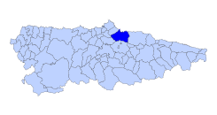
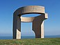
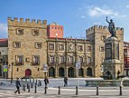

Gijón (en asturiano Xixón) es una ciudad española con la categoría histórica de villa.Es el único núcleo de población de la parroquia del mismo nombre. Su concejo —denominación que reciben los municipios en el Pincipado de Asturias — es el más poblado de la comunidad autónoma, con 267 706 habitantes en 2022.
Geográficamente, la ciudad y su término municipal se localizan junto a una bahía en la zona central de Asturias, a 28 km de Oviedo y 26 km de Avilés. Allí forman parte de una gran área metropolitana que abarca veinte concejos de la región. Esta área, vertebrada por una densa red de carreteras y ferrocarriles, contaba con una población de 835 053 habitantes en 2011, los cuales la convierten en la séptima de España. En la península ibérica, la villa y el concejo se sitúan en la parte central de la cornisa cantábrica y, a escala europea, en la zona sur del Arco Atlántico.
Desde su fundación en época romana, el desarrollo del núcleo urbano ha estado vinculado al de su puerto, que actualmente es líder en movimientos de graneles sólidos en España.Hasta fechas recientes, Gijón tuvo un carácter eminentemente industrial, lo que favoreció su gran crecimiento de los siglos xix y xx. No obstante, durante las últimas décadas, la crisis de la siderurgia y el sector naval han llevado a la reconversión de su tejido productivo, transformando la ciudad en un centro turístico, universitario, comercial y de I+D+i. Así, además de contar con una red municipal de museos, alberga la Milla del Conocimiento Margarita Salas. Esta comprende el complejo cultural de la Universidad Laboral, un campus universitario y un parque científico y tecnológico.
La ciudad es conocida por antonomasia como «capital de la Costa Verde» y es asimismo capital de la provincia marítima de Gijón. Por el concejo discurre el Camino de Santiago en su ruta costera y en él tienen su sede el Consejo Consultivo del Principado de Asturias, la Radiotelevisión del Principado de Asturias y el Centro de Seguridad Marítima Integral de Salvamento Marítimo.
El origen del nombre de Gijón suscita desde hace tiempo un intenso debate entre los estudiosos.En fecha tan temprana como 1899, Miguel de Unamuno emitió ya su opinión, según la cual la palabra provendría del latín saxum «peñasco», lo cual tendría relación con las características geográficas del emplazamiento de la ciudad, cuyo núcleo primitivo se asentó en el gran promontorio que hoy se denomina Cerro de Santa Catalina y en el que se ubica el casco histórico de Cimadevilla. Otras interpretaciones de la época buscan el origen del término en voces celtas como:
Basándose en el primitivo carácter de Gijón como asentamiento militar, Sánchez propone la palabra sessio, que aparece en expresiones como sessio legionis o in sessione legionum, teoría que reforzaría la presencia de unas «aras sestianas» o «aras sessianas» que algunos autores sitúan en la Campa Torres y Sánchez interpreta como «aras de la sessio» o «aras sessianas», es decir, «aras gijonesas». Otras explicaciones han buscado el origen del término en antropónimos como gegionus, gegion, segius (según Manzanares); sassonius (según Schulze) o hipotéticos *iaionus, *ieionus (según García Arias). Por otra parte, según sostiene el filólogo Xosé Lluis García Arias, la enormemente popular identificación de Gijón con la Gigia, citada por Ptolomeo, en realidad no tendría nada que ver con la urbe asturiana sino que correspondería a una población situada en lo que hoy es territorio leonés, quizá próxima al río Cea. También cabe suponer que puesto que la ciudad fue fundada por la Legio VII Gemina deba de ahí su nombre.
Volver al indiceEl Estatuto de Autonomía del Principado de Asturias prevé la protección, uso y promoción de la lengua asturiana en la comunidad autónoma.La Ley 1/1998, de 23 de marzo, de uso y promoción del bable/asturiano desarrolló la anterior norma y dispuso que los topónimos de la región tendrían la denominación oficial en su forma tradicional.Posteriormente, y siguiendo los pasos descritos por el Decreto 98/2002, de 18 de julio, por el que se establece el procedimiento de recuperación y fijación de la toponimia asturiana, el Gobierno de la comunidad autónoma oficializó los nombres vernáculos de todos los núcleos de población del concejo de Gijón. Así, por ejemplo, el topónimo de la capital municipal pasó a ser bilingüe: «Gijón/Xixón».No obstante, el Decreto 98/2002 indica que para la alteración de la denominación de los concejos deberá tramitarse un expediente conforme a lo dispuesto en la Ley 7/1985, de 2 de abril, reguladora de las Bases del Régimen Local.Según esta última norma, los cambios de denominación de los municipios españoles solo tendrán carácter oficial cuando se publiquen en el Boletín Oficial del Estado.Dado que esto aún no ha sucedido para Gijón, a día de hoy el nombre castellano es el único oficial para el concejo.
Volver al indice Gijón está situado en el centro de la costa cantábrica del Principado de Asturias, España, en el suroeste de Europa, al norte de la península ibérica, sobre una rasa litoral en las estribaciones de la cordillera Cantábrica. Forma parte de la vertiente hidrográfica cantábrica y se sitúa en su punto más alto (Pico Cima) a 737 m s. n. m.. El punto más alto de la zona urbana (Ceares) se sitúa a 59 m s. n. m.. El término municipal de Gijón tiene una superficie de 182,1 km² y una forma vagamente rectangular. La ciudad, que ocupa una superficie aproximada de 13,9 km², está situada en el tramo costero central del concejo, en una bahía dividida por el Cerro de Santa Catalina (Cimadevilla) que separa la playa de San Lorenzo al este, del Puerto Deportivo, playas de Poniente y Arbeyal, astilleros y puerto de El Musel, al oeste.
El término municipal de Gijón limita con los siguientes concejos: Carreño al noroeste, Corvera al oeste, Llanera al suroeste, Siero al sur y Villaviciosa al este. Con Sariego sus límites llegan a unirse en un pequeño punto correspondiente a la Peña de los Cuatro Jueces, así llamada por constituir la confluencia de los concejos de Gijón, Villaviciosa, Sariego y Siero.
Volver al indice
El clima de Gijón, determinado por la presencia del mar y la baja altitud del concejo, es un clima oceánico, con abundantes precipitaciones desde el otoño hasta los primeros días de la primavera, y un tiempo más estable y cálido en verano. Según los datos ofrecidos por la Agencia Estatal de Meteorología para la estación meteorológica de Gijón (período 1971-2000), la media del mes más frío (enero) fue de 8,9 °C, la media del mes más cálido (agosto) fue de 19,7 °C y la temperatura media anual es de 13,8 °C (media anual de máximas: 17,6 °C; media anual de mínimas: 9 °C).La nieve cubre ocasionalmente en el invierno los montes del concejo que rodean la ciudad y llega de forma esporádica al centro de la ciudad, con una media de un día de nieve anual.
La precipitación media anual es de 920 l/m². Ello se debe al denominado efecto de ladera, según el cual las lluvias más intensas se localizan en las zonas más altas y las mínimas en zonas costeras del centro y el occidente. Coincidiendo con la época de menos lluvias se dan situaciones de aridez y sequía (el 11 % de los meses hay aridez y el 9 % el déficit hídrico es grave).
Los vientos son esporádicos y estacionales. En invierno soplan preferentemente del sureste, templados y cálidos, a causa de la retirada hacia el sur del anticiclón de las Azores, con lo que las borrascas atlánticas siguen una trayectoria más meridional. En verano la situación se invierte, predominando vientos del nordeste, fríos y secos.
| Parámetros climáticos promedio de Gijón | |||||||||||||
|---|---|---|---|---|---|---|---|---|---|---|---|---|---|
| Fuente:Agencia Estatal de Metereología | |||||||||||||
| Mes | Ene. | Feb. | Mar. | Abr. | May. | Jun. | Jul. | Ago. | Sep. | Oct. | Nov. | Dic. | Anual |
| Temp.máx.abs.(ºC) | 23.6 | 23 | 27 | 28 | 31.8 | 36.4 | 31.4 | 30 | 34.6 | 30.4 | 26.1 | 25 | 36.4 |
| Temp.máx.media (ºC) | 13.1 | 13.8 | 14.9 | 15.6 | 17.8 | 20.2 | 22.4 | 23.2 | 21.8 | 19.0 | 15.6 | 14.0 | 17.6 |
| Temp.media (ºC) | 8.9 | 9.6 | 10.7 | 11.8 | 14.3 | 16.9 | 16.9 | 19.2 | 19.7 | 17.9 | 15.0 | 11.6 | 9.9 |
| Temp.mín.media (ºC) | 4.7 | 5.4 | 6.6 | 8.1 | 10.9 | 13.6 | 16.0 | 16.2 | 14.1 | 11.0 | 7.6 | 5.8 | 10.0 |
| Temp.mín.abs.(ºC) | -9.6 | -6.0 | -3.0 | -1.4 | 2.2 | 5.8 | 5.6 | 5.2 | 4.7 | 2.6 | -3.4 | -6.8 | -9.6 |
| Precipitación total (mm) | 94 | 85 | 74 | 93 | 79 | 47 | 45 | 54 | 70 | 104 | 120 | 104 | 971 |
| Días de precipitaciones (≥ 1mm) | 12 | 11 | 10 | 12 | 11 | 7 | 6 | 7 | 8 | 11 | 12 | 12 | 121 |
| Horas de sol | 103 | 109 | 137 | 151 | 167 | 180 | 194 | 190 | 158 | 132 | 106 | 92 | 1721 |
| Se refiere a la cifra más alta de la fila | |
| Se refiere a la segunda cifra más alta de la fila | |
| Una cifra cualquiera | |
| Se refiere a la cifra más baja de la fila | |
| Se refiere a la segunda cifra mas baja de la tabla |